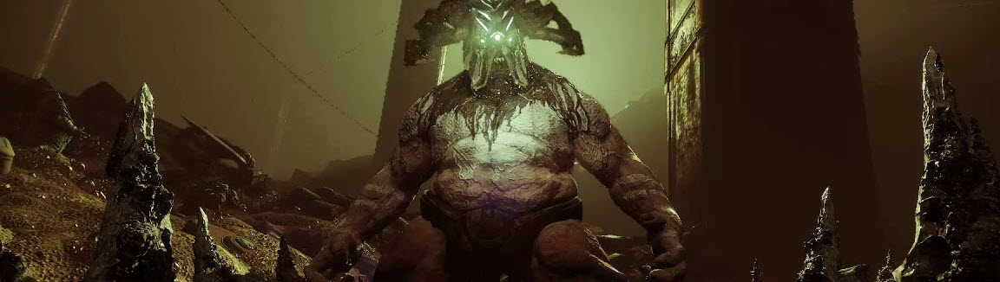
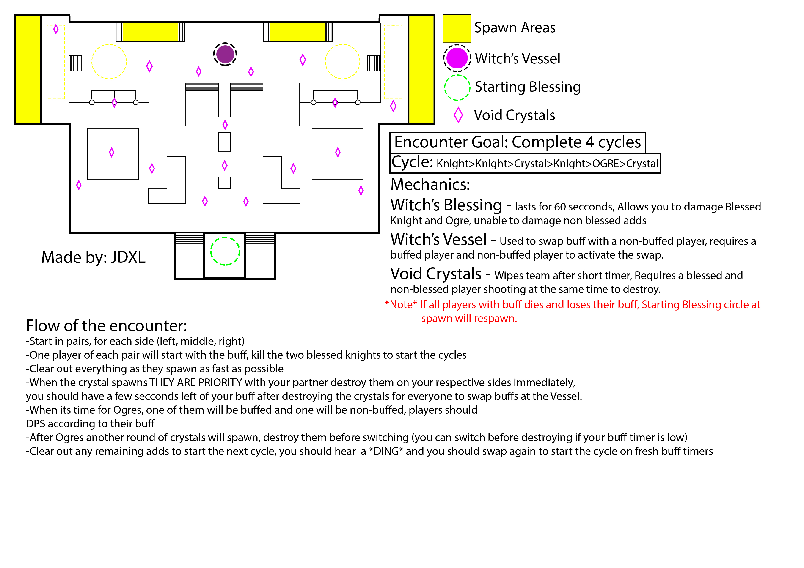

Crown of Sorrows
Three teams of two for the whole thing. Find a friend, someone you really trust, someone who completes you by covering the mechanical things you're unable to. Also, no free rides, everybody has to do all the things at some point.
Encounter 01 - Dispel the Hive Ward
Remember that room where The Mockery takes place? We're there. Please consult the map I stole from the internet below where the starting blessing is also where you place the rally banner.
Classes
- Hunters: Tether or Golden Gun. Control the field if enemies get out of pocket or burst down ogres when time is of the essense.
- Titans: Any for add clear, I do not know your lives. Maybe a bubble over the witch's vessel for safety?
- Warlocks: Chaos Reach or Nova Bomb for ogre dps, just no roaming.
Weapons
- Primary: Consider a decent shotgun for knights so you can save your ammo for ogres or dire straits. If you're low on range in the other two slots, bring a sniper.
- Special: Everyone's gonna use Gnawing Hunter or Recluse here and I get it, it's fine. Now if you had a gun to turn a man into an orb, and then weild them, as an orb, to prevent enemies in your field from doing anything... I wouldn't stop you.
- Heavy: Swords are great, but just make sure you can cover some range across your other two slots. Xenophage, too, if you can maintain a good ammo supply. I feel grenade launchers invite a bit too much chaos.
I don't want to explain anymore, making Datto do it, but the goal here is in 60 seconds we would have: gained buff, killed adds, kill knights, destroy crystal, switch buff. Rinse. Repeat. 7ish times. Easy. The things that will kill us are crystals and not having a good rhythm with buff switching.
Intermission - Jump puzzle crystal thing
We'll cross this bridge when we burn it. Kill crystals like Encounter 01, but now sometimes they have shields and you have to get close and punch them. Also, small platforms.
Encounter 02 + 03 - Gahlran, the Sad Boy
Kill adds, bubble and well are perhaps more important for survivability. Bring a sword for DPS, maybe, if you're too close we risk losing buffs which we need for DPS phases so... only some people bring swords. The rest of you I don't care. Also definitely phoning this in. Here, have two maps for the two phases plus a Datto video.